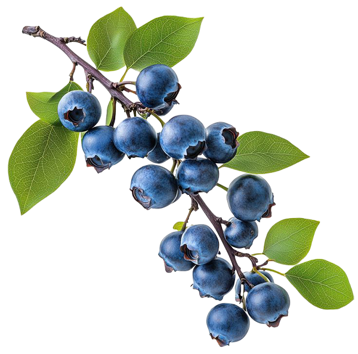

The blueberry is a perennial flowering plant in the family Ericaceae in the genus Vaccinium.
Blueberries are a good choice for the home garden as they require little space, are easy to grow,
and are well-suited to acidic soil. The indigo colored fruit can be eaten in a variety of ways:
fresh, in baked goods, in jams and jellies, and juice and wine. Blueberry fruit is low in calories
and sodium and is a great source of fiber.

Blueberry shrubs are woody plants and are generally categorized as lowbush, wild, or highbush.
Blueberry plants begin to produce fruit in the third year but are not fully productive until year 6.
Blueberry bushes have white flowers in May and red-orange fall foliage.
Available all year long!
A 3-year old blueberry bush can produce 2-3 pints and the yield will increase each year up to 7-10 pints
from a 10-year-old bush. Berries turn blue 3-4 days before they are fully ripened.
Berries with a reddish tinge are unripe and should not be picked as they will not ripen after picking.
Ripe berries will easily detach from the bush. Berries picked in the cool of the early morning will
have a longer storage life than those that are holding the heat of the day.